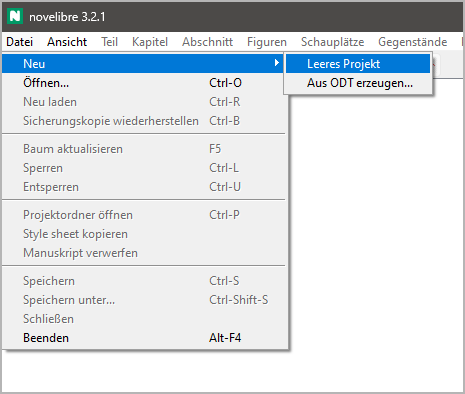
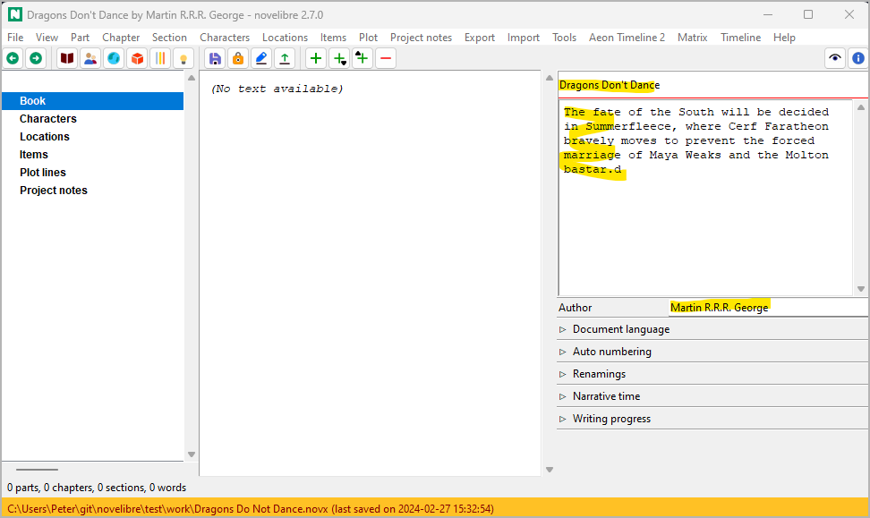
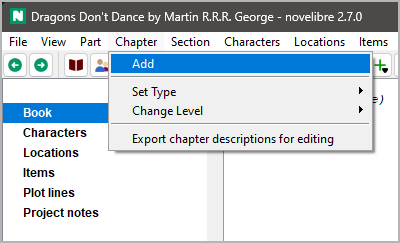
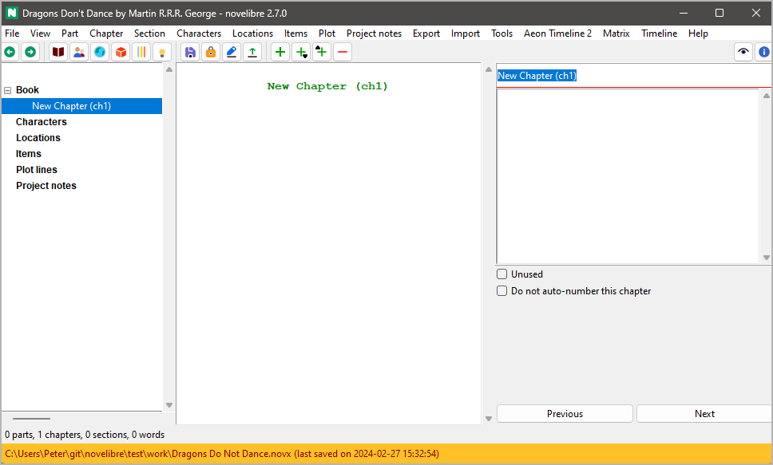
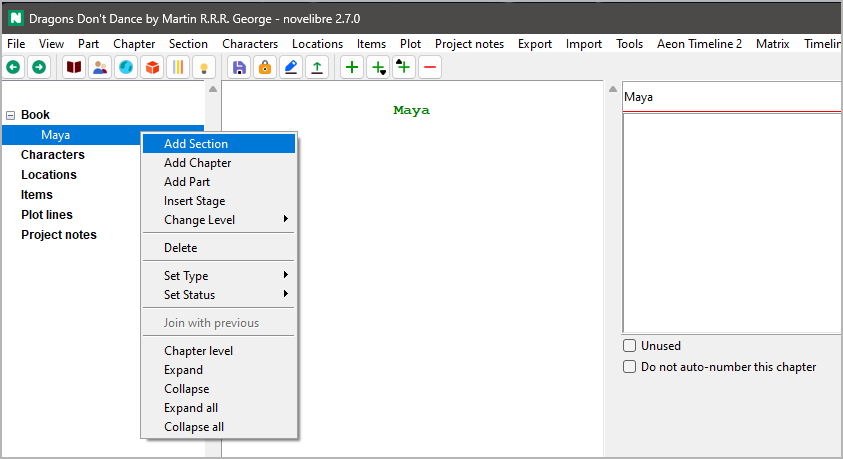
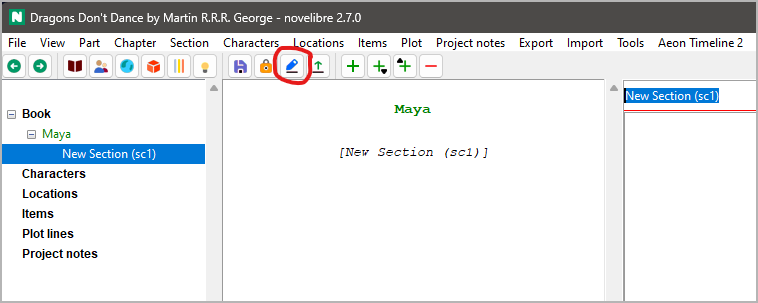
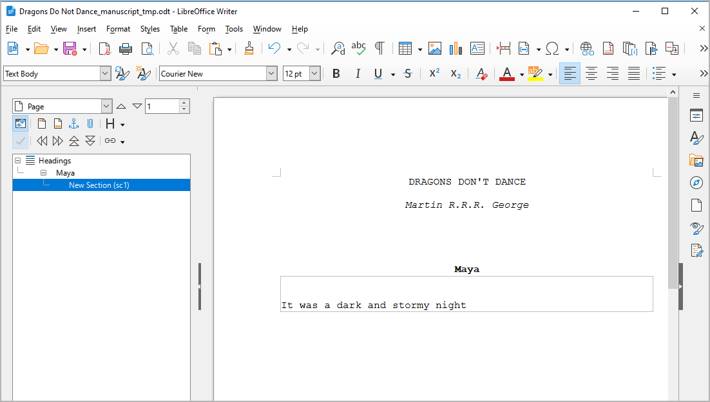
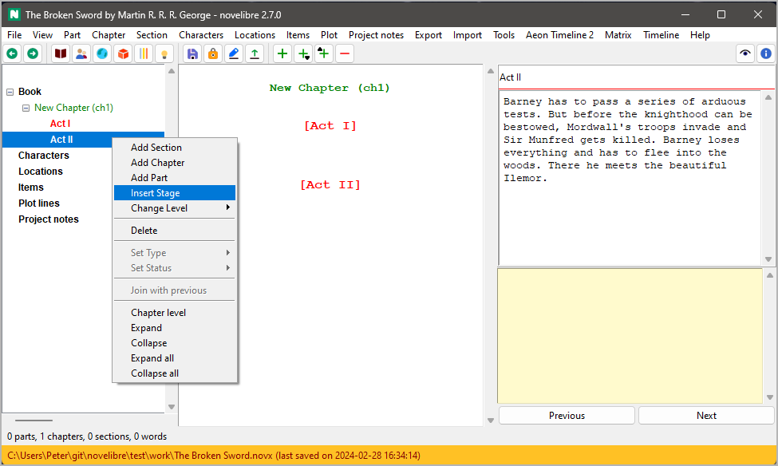
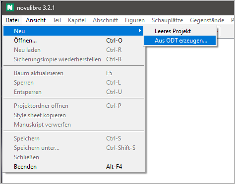

Erste Schritte
Von Null beginnen
Wenn Sie novelibre starten, indem Sie eine .novx Datei auf das Symbol ziehen, wird dieses Projekt geöffnet. Andernfalls wird das Projekt der letzten Sitzung automatisch wieder geöffnet, falls es eines gibt.
Nehmen wir an, dass beides nicht der Fall ist, z. B. wenn das Programm zum allerersten Mal nach der Installation aufgerufen wird. Nehmen wir außerdem an, dass wir noch keine Vorbereitungen getroffen haben, d.h. wir haben weder ein angefangenes Werk noch eine Gliederung irgendeiner Art. Zunächst legen wir mit Datei > Neu > Leeres Projekt ein neues leeres Projekt an.

Ein Dateiauswahldialog öffnet sich und fragt nach dem Dateinamen und dem Speicherort des neuen Projekts.
Tipp
Es ist von Vorteil, einen eigenen Ordner für das Projekt anzulegen, da alle exportierten Dokumente auch hier gespeichert werden. Dazu gehören auch Hilfsdateien wie Zeitleisten oder projektbezogene Konfigurationsdateien für Werkzeuge und Plugins.
Es ist nicht obligatorisch, aber wir sollten dann einen Titel und einen Autorennamen eingeben, vielleicht auch eine Beschreibung unserer Idee. Um gleich loslegen zu können, verschieben wir die restlichen Projekteinstellungen auf später.

Wir brauchen mindestens einen Abschnitt, um mit dem Schreiben beginnen zu können. Und dieser muss zu einem Kapitel gehören. Also erstellen wir jetzt das erste Kapitel mit Kapitel > Hinzufügen.

Nachdem das Kapitel erstellt wurde, setzt novelibre den Fokus auf den Kapitel-Titel am oberen Rand des rechten Fensters. Überschreiben wir den vorgegebenen Titel.

Hinweis
Wenn sie sich dafür entscheiden, novelibre die Kapitel automatisch nummerieren zu lassen, können Sie das überspringen und den voreingestellten Titel stehenlassen.
Es gibt nun mehrere Möglichkeiten, einen Abschnitt hinzuzufügen. In diesem Beispiel klicken wir mit der rechten Maustaste auf das Kapitel und wählen Abschnitt Hinzufügen.

Gleich mit dem Manuskript beginnen
Sobald der neue Abschnitt in der Baumansicht erscheint,
können wir ein Manuskript exportieren.
Klicken Sie einfach auf die Schaltfläche  in der Werkzeugleiste.
in der Werkzeugleiste.

Fertig! Writer sollte sich nun mit dem Manuskript öffnen. Fangen Sie einfach an, Ihren Roman innerhalb des Textrahmens zu schreiben.

Wir können nun mit Writer weiterarbeiten, wie auf der folgenden Seite beschrieben, und während des Schreibens neue Abschnitte und Kapitel erzeugen.
Tipp
Jetzt können Sie das Manuskriptdokument „aus dem Stegreif“ bearbeiten, bis es Ihnen sinnvoll erscheint, alles zu novelibre zurückzuspielen, um dort eine Übersicht zu erzeugen und Ihr Projekt aufzusetzen.
Ich empfehle jedoch, das zumindest täglich am Ende Ihrer Schreibsitzung zu tun und am nächsten Tag ein neues Manuskriptdokument zu exportieren. Dann kommen Sie nicht in Verzug mit der Eingabe der Kapitelüberschriften und der Inhaltsbeschreibungen, und Sie bekommen Ihre Kapitel nummeriert, falls gewünscht. Außerdem speichert novelibre dann Einträge im täglichen Wortzählprotokoll.
Eine Kapitelstruktur anlegen
Falls sie es vorziehen, vor dem eigentlichen Schreiben zuerst einmal einen Plan zu machen, ist novelibre das richtige Werkzeug für Sie. Dann rufen Sie nicht gleich Writer mit einem leeren Dokument auf, sondern erzeugen zuerst ein Gerüst aus leeren Kapiteln, für die Sie Inhaltsangaben eingeben. Oder Sie beslassen es zunächst bei einem einzigen leeren Kapitel, das Sie mit leeren Abschnitten füllen, die Sie dann später auf weitere Kapitel verteilen können. Die Ergebnisse Ihrer Vorbereitungen können als Textdokumente in Form von Zusammenfassungen exportiert werden, beispielsweise auf der Ebene von Kapiteln oder Abschnitten.
Eine dramaturgische Struktur aufbauen
Allerdings können Sie auch auf einer abstrakteren Ebene beginnen und zuerst Stadien wie Akte oder Schritte anlegen, um erst später die Abschnitte als Szenen einzufügen. Dazu erstellen Sie zunächst mindestens ein Kapitel. Dann erzeugen Sie Ihre Stadien.

Das Verfahren wird auf der Seite Mit novelibre plotten beschrieben. Dort erfahren Sie auch, wie Sie mehrere Handlungsstränge oder Charakterbögen anlegen.
Tipp
Mit dem nv_templates-Plugin können Sie novelibre Ihr neues Projekt mit einer vorgefertigten Struktur wie dem „Drei-Akt-Modell“ oder „Save The Cat“ aufsetzen lassen.
Ein Handlungsraster anlegen
Falls Sie Ihren Roman mit einem „Plot grid“-Handlungsraster ausarbeiten wollen, können Sie das mit novelibre tun:
Erstellen Sie ein neues leeres Projekt, wie oben beschrieben.
Fügen Sie ein einzelnes Kapitel hinzu.
Wählen Sie dieses Kapitel aus, und fügen Sie dann mehrere Abschnitte hinzu..
Falls Sie mehr als die zulässige Anzahl Abschnitte brauchen, wiederholen Sie Schritt 3. Es ist jedoch sinnvoll, zuerst einmal mit weniger Abschnitten zu beginnen, die sich leichter auf die später zu erzeugenden Kapitel verteilen lassen. Sie können das Handlungsraster mit der Zeit erweitern.
Legen Sie die benötigten Plotlinien an.
Exportieren Sie ein Handlungsraster und füllen Sie die Tabellenzellen aus.
Importieren Sie das Handlungsraster.
Erzeugen Sie mehr Kapitel, und verteilen Sie die Abschnitte darauf.
Mit einem angefangenen Werk beginnen
Let’s assume that you have already written an extensive novel Manuskript with Writer and now want to continue with novelibre. In this case you first make sure to set it up in a way, novelibre can recognize its parts, chapters, and sections.
Wichtig
- How to set up a work in progress for import
A work in progress must not have any third level heading.
Heading 1 → Teil Titel.
Heading 2 → Kapitel Titel.
* * *→ Abschnitt divider (not needed for the first section in a chapter).Alle other text is considered section content.
Vorsicht
Formatting that is not supported with novelibre is lost. The same applies to images. So if your work depends on a sophisticated layout that is beyond novelibre’s capabilities, consider using comments as reminders as you write. That will help you doing the special formatting at the end, when you prepare the finished novel for publication. If this is not enough, novelibre may not be the right tool for you.
When your Manuskript is ready, create your new project with Datei > Neu > Aus ODT erzeugen….

A file selection dialog opens and asks for the ODT document. The new project will be created in the same directory and named after the Manuskript file, but with the .novx extension.
Vorsicht
Once your novel is imported into novelibre, your initial ODT document is no longer needed. So if you want to keep it, you best move it elsewhere, so that it is not overwritten by an exported document later on.
Tipp
After importing an extensive piece of work, you may have a whole lot of sections that need to be named and described. A plot grid might be a great help for doing this.
Mit einer Gliederung beginnen
Instead of a work in progress, you also can import an outline made with Writer into novelibre to get a novel project with empty, but named and described chapters and sections. At first glance, an outline looks the same as a work in progress, but it has third level headings for the sections, indicating their Titels. If novelibre finds third-level headings, it considers all body text to be description. In this case, formatting doesn’t matter.
Wichtig
- How to set up an outline for import
An outline has at least one third level heading.
Heading 1 → Teil Titel.
Heading 2 → Kapitel Titel.
Heading 3 → Abschnittstitel.
Alle other text is considered to be chapter/section description.
When your Manuskript is ready, create your new project with Datei > Neu > Aus ODT erzeugen….
A file selection dialog opens and asks for the ODT document. The new project will be created in the same directory and named after the Manuskript file, but with the .novx extension.
Vorsicht
Once your novel is imported into novelibre, your initial ODT document is no longer needed. So if you want to keep it, you best move it elsewhere, so that it is not overwritten by an exported document later on.